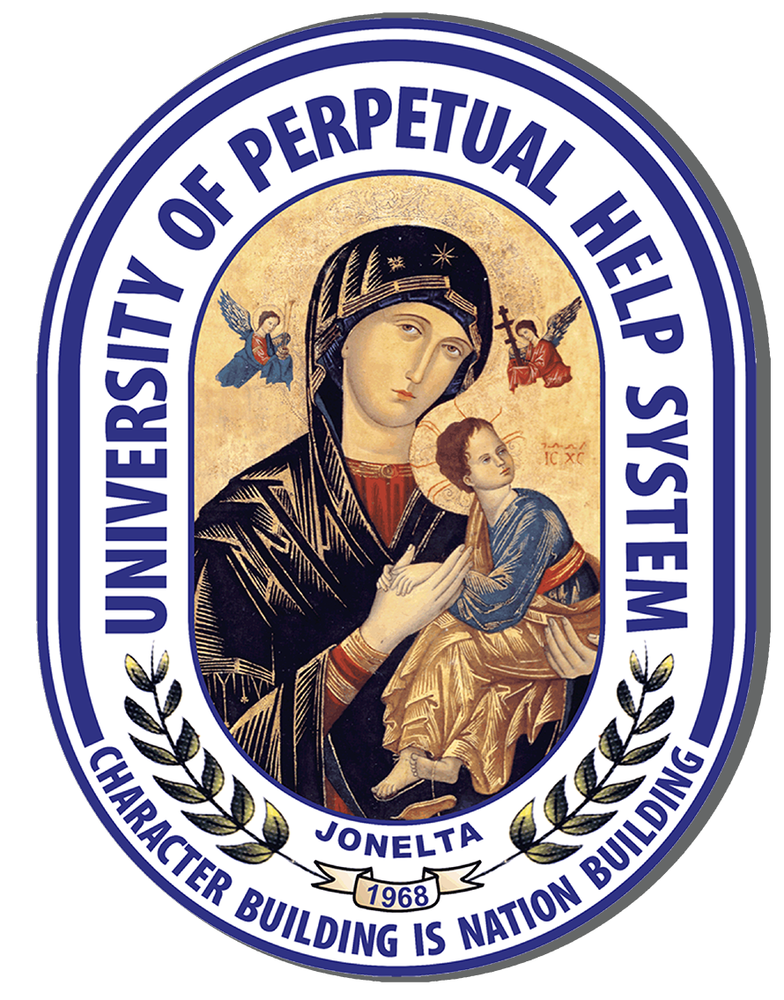
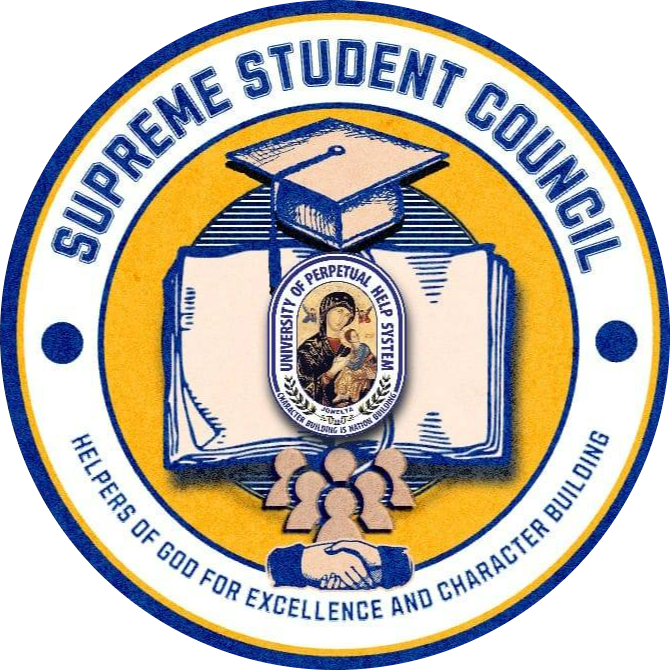
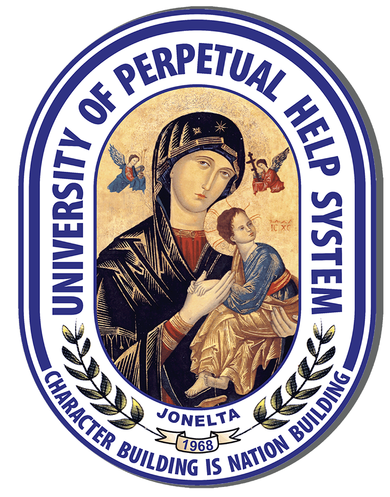
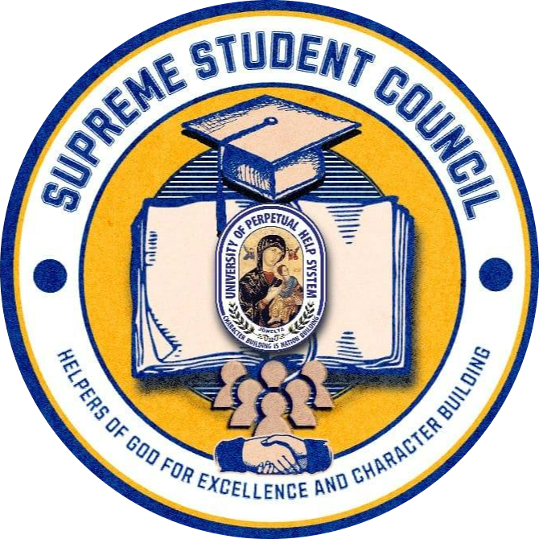

Our Business Office
UPH Compound, National Highway,
Sto. Niño,City of Biñan, Laguna
02-8779-5310
Email
Corporate Email: info@uphsl.edu.ph
Admission: admission.college@uphsl.edu.ph
Basic Education: basiced@uphsl.edu.ph
Senior High School: shsdirector@uphsl.edu.ph;
shs@uphsl.edu.ph
College Registrar: registrar@uphsl.edu.ph
Business Hours
Weekdays: 8am to 5pm
Saturday: 8am to 5pm
Sunday:Closed
 


